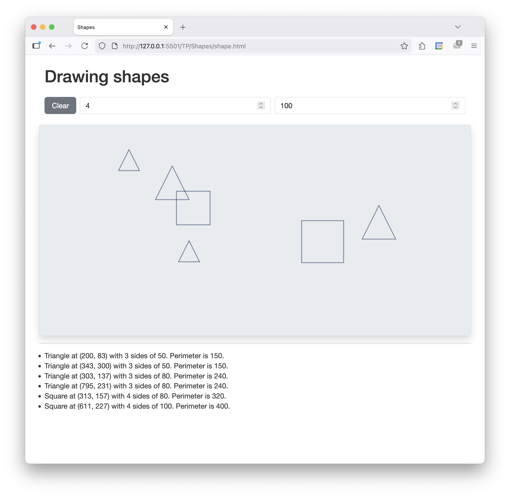
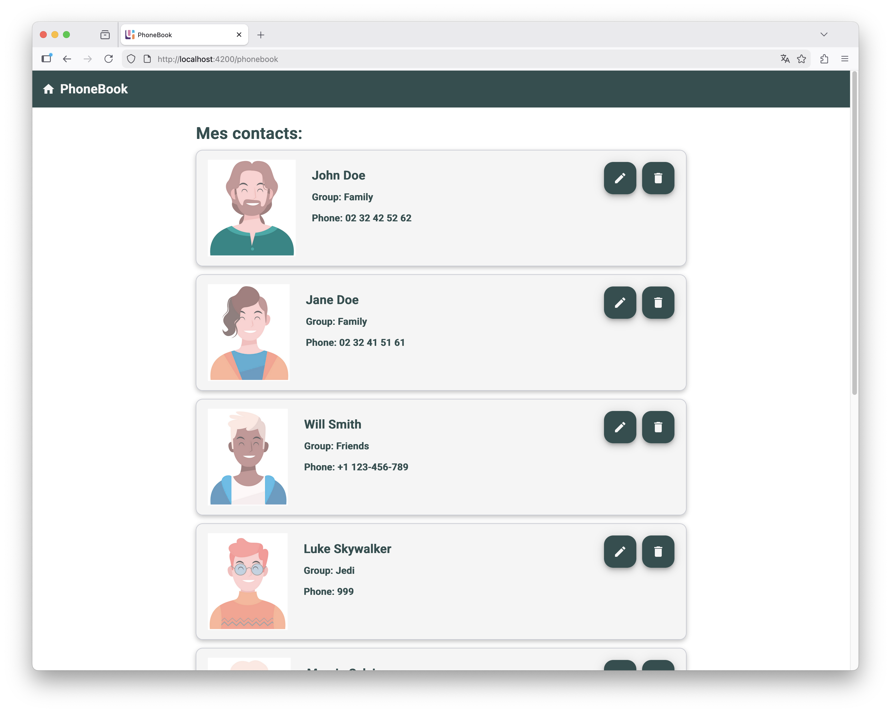

Web Dynamique côté Client
Travaux Pratiques
Gestion de contacts
Préparation
Le but est de créer une interface de gestion de contacts, similaire à celle montrée dans la figure ci-dessous.

Commencez par créer la page HTML qui hébergera l'interface et dans laquelle sera exécutée le code JavaScript qui prendra en charge les fonctionnalités:
- Créez une page
contacts.htmlqui contient - Un tableau HTML de 5 colonnes, comme montré sur la figure ci-dessus. Pour le moment, le tableau est vide à l'exception de la ligne d'en-tête qui contient les titres des colonnes.
- Une balise
scriptavec l'instruction suivante: - Créez un script
contacts.jsdans lequel est définie une fonctiondisplayContactsqui affiche un message dans la console. - Testez votre page HTML en l'ouvrant dans un navigateur et vérifiez que le message s'affiche bien dans la console.
document.addEventListener("DOMContentLoaded", displayContacts);
displayContacts à la fin du chargement du DOM.
Note: vous pouvez utiliser Bootstrap et/ou d'ajouter vos propres styles CSS pour mettre en page votre interface.
Création de contacts en JS
La deuxième étape consiste à créer des objets JavaScript pour représenter les contacts. Un contact est caractérisé par:
- une propriété
firstnamequi contient le prénom du contact - une propriété
lastnamequi contient son nom - une propriété
emailqui contient son adresse mail - une propriété
phonequi contient son numéro de téléphone
- Dans
contacts.js, créez 3 objets JS avec les propriétés décrites ci-dessus, et contenant les valeurs montrées sur la figure ci-dessus. - Créez un tableau JS rassemblant ces objets.
- Modifiez la fonction
displayContactspour qu'elle parcourt le tableau et pour chaque objet "contact", ajoute une ligne dans le tableau HTML. Pour chaque ligne, la dernière colonne contient trois boutons d'actions, inopérants pour le moment.
Note: pour parcourir un tableau en JavaScript, vous pouvez utiliser une boucle for..of (documentation) ou la méthode forEach (documentation).
Constructeur de contact
Pour faciliter la création de nouveaux contacts:
- Définissez une fonction constructeur
Contactqui prend en paramètres les informations d'un contact et initialise les propriétés de l'objet. - Modifiez le code de création des contacts pour utiliser ces constructeurs. Ajoutez 7 nouveaux contacts et affichez-les dans le tableau HTML, comme montré sur la figure ci-dessous.

Filtrer les contacts
On propose maintenant d'ajouter une barre de filtre en haut de la page, comme montré sur la figure ci-dessous.

Cette barre est un champs de saisie qui permet à l'utilisateur de saisir du texte pour filtrer les contacts affichés dans le tableau. À chaque cacratère saisi dans la barre, le contenu du tableau HTML se met à jour pour ne laisser afficher que les contacts ciblés. Un contact est ciblé si l'une de ses propriétés contient le texte saisi. Par exemple, dans l'image ci-dessus, seuls les contacts contenant "univ-rouen" dans leur adresse mail ont été conservés dans le tableau.
- Ajoutez la barre de saisie dans votre page HTML, au dessus du tableau de contact. Il s'agit d'un simple
inputde type texte, éventuellement inclus dans undivconteneur. - Dans
contacts.js, définissez la fonctionfilterContactsqui: - récupère le texte saisi dans la barre de filtre
- récupère l'élément correspond au corps du tableau HTML et le vide
- parcourt le tableau des contacts et pour chacun d'eux, vérifie s'il correspond au filtre
- met à jour le tableau HTML pour ajouter une ligne pour chaque contact ciblé
- Ajoutez un écouteur d'événement sur la barre de filtre pour appeler la fonction
filterContactsà chaque saisie
Suppression d'un contact
L'objectif est d'implémenter la fonctionnalité de suppression d'un contact depuis le tableau affiché. Nous n'implémenterons pas les fonctionnalités d'affichage et de modification des contacts.
- Pour chaque bouton "Supprimer" du tableau, ajoutez un
idqui contient l'indice de la ligne concernée. - Ajoutez également pour chacun d'eux, un écouteur d'événement nommé
deleteContact. - Définissez
deleteContactavec l'eventen paramètre: Ensuite: - À l'aide de cet
eventrécupérer l'indice du contact à supprimer. - Affichez une fenêtre de confirmation avec la fonction
confirm. - Si l'utilisateur confirme la suppression, supprimez le contact du tableau des contacts (utilisez la méthode
splicedes tableaux JS - documentation). - Appelez la fonction
displayContactspour mettre à jour l'affichage du tableau HTML.
Dessin de formes géométriques
Préparation
Le but est de créer une application de dessins de formes géométriques, comme montré sur la figure ci-dessous. Ces formes géométriques seront représentées en JavaScript par des classes.

- Créez une page
shapes.htmlqui contient - Un élément
divvide, avec l'id"controlPanel". - Un canvas HTML5 de 1000x500 pixels.
- Un liste HTML vide, avec l'
id"shapeList". - Une balise
scriptavec l'instruction suivante: - Créez un script
shapes.jsdans lequel est définie une fonctioninitializeCanvasqui affiche un message dans la console. - Testez votre page HTML en l'ouvrant dans un navigateur et vérifiez que le message s'affiche bien dans la console.
document.addEventListener("DOMContentLoaded", initializeCanvas);
La classe Shape
Les formes géométriques à dessiner dans le canvas sont soit des carrés, soit des triangles équilatéraux. Pour les représenter, vous allez créer une classe Shape comprenant:
- un type, sous la forme d'un
string("Square" ou "Triangle") - des coordonnées
xetyindiquant la position de la forme (son centre) - un entier
sidesreprésentant le nombre de côtés - un entier
sideLengthreprésentant la longueur des côtés
Commencez par créer la classe:
- Déclarez la classe
Shapeavec les propriétés mentionnées ci-dessus, privées. - Définissez un constructeur qui initialise ces propriétés à partir de paramètres.
- Définissez des méthodes d'accès publiques (getters et setters) pour chaque propriété. Les setters doivent valider les valeurs avant de les affecter.
- Définissez une méthode
perimeterqui calcule et retourne le périmètre de la forme. - Redéfinissez la méthode
toStringpour retourner une représentation textuelle de la forme. Par exemple: - Définissez une méthode
drawqui prend en paramètre le contexte du canvas et qui y dessine la forme.
const shape = new Shape("Square", 10, 20, 4, 200);
console.log(shape.toString()); // "Square at (10,20) with 4 sides of 200. Perimeter is 800"
Ensuite, pour tester votre classe:
- Dans
shapes.html, ajoutez audiv#controlPanel: - un bouton "Clear"
- deux champs de saisie, l'un pour saisir le nombre de côtés, l'autre pour saisir la longueur des côtés.
- Ajoutez un écouteur pour le clic sur le bouton, qui efface les dessins présents sur le canvas.
- Ajoutez un écouteur d'événements pour les clics sur le canvas qui:
- récupère la position du clic.
- récupère les valeurs des champs de saisie pour le nombre de côtés et la longueur des côtés.
- crée une instance de
Shapeavec ces valeurs. - ajoute un item
lià la listeshapeList, affichant le résultat de la méthodetoString(). - dessine la forme sur le canvas en invoquant la méthode
drawde l'instance.
Les classes Square et Triangle
La classe Shape permet déjà de dessiner des carrés et des triangles, mais il est préférable de créer des classes spécifiques pour chacune de ces formes. Ces deux classes, Square et Triangle, héritent de Shape et redéfinissent certaines méthodes pour un comportement adapté.
- Définissez la classe
Squarequi hérite deShape. - Définissez le constructeur pour que celui-ci sollicite le constructeur de la classe parente avec les paramètres appropriés. Le constructeur de
Squaren'a besoin que de la position et de la longueur des côtés. - Définissez une méthode
areaqui calcule et retourne l'aire du carré. - Redéfinissez la méthode
drawpour qu'elle ne dessine que des carrés. - Redéfinissez la méthode
toStringpour qu'elle ajoute l'aire du carré à la description textuelle. - Faites de même pour la classe
Triangle. - Dans
shapes.html, remplacer le premier champs de saisie qui permet de saisir le nombre de côtés, par une liste déroulante qui contient les deux options "Carré" et "Triangle".
La classe Rectangle
Pour terminer, il s'agit de définir la classe Rectangle qui hérite de Shape et qui redéfinit les méthodes nécessaires pour un comportement adapté. Les côtés d'un rectangle ne sont pas tous égaux, à vous de trouver les solutions adaptés à cette spécificité.
Gestion de contacts en Angular
Préparation
Le but est de créer une application Angular pour la gestion d'un répertoire de contacts, similaire à celle montrée dans la figure ci-dessous.

Les outils nécessaires au développement avec Angular sont déjà installés en salle de TP. Si vous souhaitez utiliser votre propre ordinateur, vous devez configurer votre environnement de travail comme expliqué ici : https://angular.dev/installation. Nous proposons également d’utiliser la librairie Material. Cette librairie fournit des composants d’interfaces pré-conçus (boutons, barre de navigations, etc.). Pour utiliser Material, il faut ajouter le package correspondant à votre projet. Pour cela, dans le terminal, placez vous dans le dossier d’un projet Angular et utilisez la commande :
ng add @angular/material
La librairie sera accessible dans le projet. Ensuite, si besoin, consultez la documentation pour connaître les composants disponibles et leur utilisation.
Un premier contact
La première étape consiste à créer l'application et afficher un seul contact:
- Créez un projet Angular et modifiez-le pour qu’il affiche une page vide.
- Ajoutez Material à votre projet, et ajoutez une barre d'outils dans le composant racine, qui affiche le titre de l'application (cf. impression écran ci-dessus).
- Ajoutez une nouvelle interface TS nommée
ContactInfoqui comprend les propriétés suivantes: name: pour définir le nom du contactphone: pour définir le numéro de téléphonegroup: pour définir la catégorie (e.g. "famille", "amis", etc.)image: pour spécifier le chemin vers l'image de profil- Ajoutez un composant
Contactqui contient une propriété de typeContactInfoet qui affiche ses informations dans un élément HTML dédié. Utilisez les composantsCardde Material, comme montré dans l'impression écran ci-dessus. Les images sont à télécharger sur UniversiTICE et à placer dans le dossierpublicde votre projet.
Liste de contacts
La deuxième étape consiste à afficher une liste de contacts.